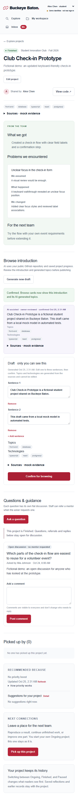
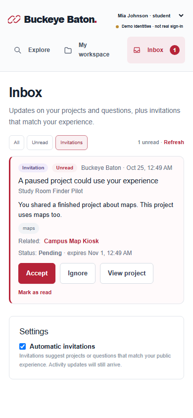
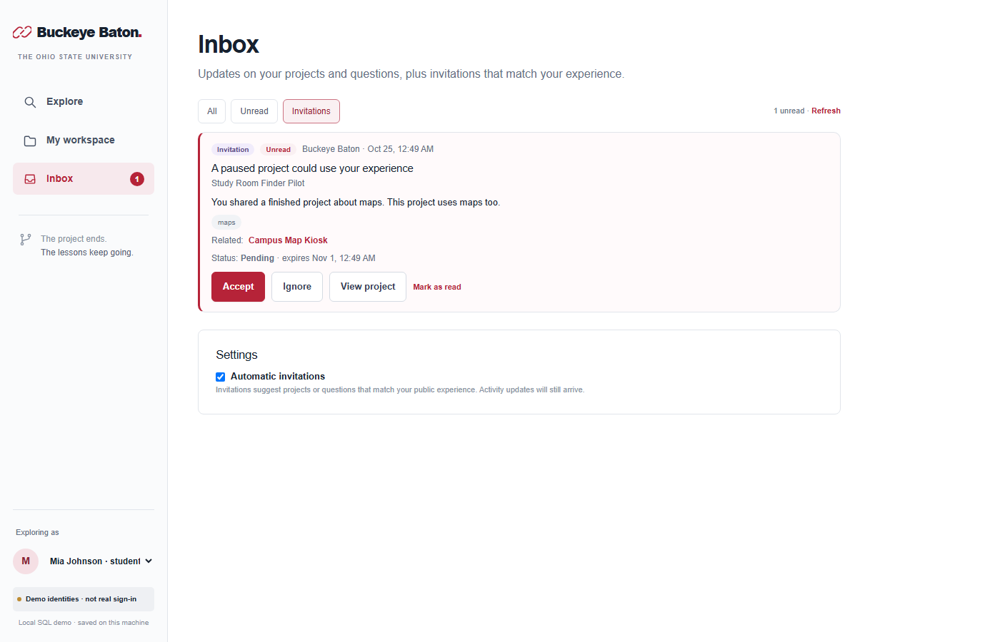

Buckeye Baton
项目经验接力
学生留下项目、经验与后续接棒；Staff把Mentor带进具体问题。浏览、总结、接棒和人工指导已交付，当前扩展消息Inbox与自动站内邀请。
当前阶段
P0–P4已通过产品验收并合main。P5在独立实现分支通过typecheck/build、backend26/26、生产browser24/24及模拟脚本2/2；含来源变化、失败后重试计时与确认后详情标签刷新回归。下一步由总控升级3001和产品验收，尚未合main或部署。
验证边界
372646c独立typecheck/build、backend20/20、生产e2e23/23和原Load more/focus探针通过，含四身份、390px及无页面自动派发。真实pg多连接、Neon/AWS/云端未验证，真实模型调用0。
待配置
真实 PostgreSQL/Neon 连接、主办方 AWS 权益和公网部署尚未验证。演示身份不是真实登录。
P5 自动验收通过，等待手动产品验收
Mentor自选五类expertise、问题分析与Staff前三候选、实时Awaiting reply；GitHub来源简介、限定标签、所有者确认。P5运行于3001，源SHA 9093dbb。详见交付报告、预览记录和手动验收。
P5产品模拟 已导入3001
新增20项目、4 Mentor、30问题、60帖子与3接棒关系；20份simulation简介、24份虚构评分，导入阶段0真实模型调用。新Mentor待回复负载4/2/1/0，原有记录保持不变。
项目与三状态总结 产品验收通过
浏览/搜索/筛选、所有者编辑/校验、历史保留；表单只显示当前状态字段，切换保留未保存输入。
接棒与导师连接 P1 accepted
三种接棒、来源/后续关系、项目问题、Staff人工引荐、指定Mentor多轮正式回复和工作台；P1已合main。
旧Lesson采用 退役
独立Lesson页面转来源项目，采用UI/数字移除，旧采用写410；历史记录保留。
P2 产品验收通过
所有者确认AI浏览简介/标签、Mentor Awaiting reply、作者/项目所有者评论删除。main合并尚无最新授权。
P3 产品修订验收通过
可解释年龄排序，Suggestions原入口与收起Detail说明，状态对应表单。无deadline评分/日期UI，微秒稳定排序与历史保持；当前3000应用38e4901。
P4 技术及产品验收通过
全角色Activity Inbox、事务通知、未读/分页/刷新、仅接棒自动邀请、限频去重、接受/忽略/设置与Node runner。评论被删除后仅删除者可保留无正文旧通知，其他接收者隐藏；help邀请与Interested helpers退役。
暂缓
真实认证、上传、代码fork、复杂关系图、外部邮件/推送与云端调度部署。AI导师推荐已进入P5实现。
配色
White #ffffff · Slate #17212f · Scarlet #b62338。强调色用于主要操作、导航与经验关联。
字体
Arial / Helvetica / sans-serif；标题、正文、元信息和控件使用统一层级。
标识
链式接力图标采用 SVG；产品名称为 Buckeye Baton。概念图保留早期工作名称，仅作为历史视觉参考。
响应式
桌面使用侧栏、项目区与辅助指南；390px 手机使用顶栏和单列内容，保持身份切换与主要操作可用。


P4预览截图（虚构演示数据）

3001/P4桌面，2026-10-25；邀请仍未接受
3001/P4，390px，无横向溢出
预览与验收截图

P5隔离生产测试库桌面，2026-10-25，虚构数据

P5隔离生产测试库390px，2026-10-25，虚构数据
P4独立生产页面验收：Inbox分页恢复截图（虚构数据，2026-10-25）；手机与四身份结果见P4_ACCEPTANCE。3000仍保留P3。

技术基线
Next.js 15.5.28 · React · TypeScript · Node 22 · Tailwind · pg / PostgreSQL。显式本地 PGlite 持久化模式用于无云端连接时的演示和测试。
当前数据旅程
项目浏览 → 读取三状态总结 → 接棒创建关联 Ongoing → 提问 → Staff 引荐 → Mentor 回复 → 明确追问与再次回复 → 后续成果。来源与历史保留，工作台按正式回复/追问推导队列。
P5接口与验证
冻结契约 · 交付报告 · 测试证据。src/server/recommendations.ts负责专长/评分/动态候选；github.ts负责有界固定版本读取；ai-jobs.ts和ai-runner.ts负责持久任务。tests/e2e/mock-github.mjs和mock-openai.mjs提供隔离证据，scripts/product-simulation.ts仅用于明确模拟批次。
P4独立预览3001
实际SHA/BuildID/PID/SQL保护与验收入口：372646c、独立演示库、runner开启，真实OpenAI/gpt-6-luna已单次验证。p4-review现为活跃服务目录，不可重建或归档。
P4最终独立验收10/10
372646c最终验收与限制 · 独立预览与用户手动剧本 · 已实现接口。协调分支已集成，main和3000尚未切换。
P4中途复验（历史）：9/10
R1/R3关闭与R2剩余竞态：原套件20/20通过，延迟Load more/focus探针失败；原worker继续只修该处。
P4首轮独立审查（历史）：7/10
R1–R3与复现工具：现有四项检查均通过，补充Unread/刷新/初始化恢复失败；候选7b8a629待返修，不替换3000。
P4单Agent当前入口
统一任务书与K1–K10 · Inbox/事件/邀请冻结契约 · 启动提示词。协调基线codex/p4-integration；worker分支codex/p4-implementation，最终独立10/10，以P4_ACCEPTANCE为准。
P3产品反馈修订
当前规则与复验重点：Suggestions for your project保留入口；状态表单只显示对应内容且历史保留；无期限加分/日期界面，旧数据兼容。原P3期限规则为历史。
P3当前预览
3000最新运行说明：应用38e4901位于p3-detail，原数据库及真实配置仍在p3-review，旧P1/P2库保留；本轮不重启或调用模型。
P3产品验收通过
当前产品规则覆盖旧期限用例；年龄排序、状态表单、Suggestions与Detail已由用户验收。
P3最终本地验收10/10
技术及产品验收记录：初版4839e77独立通过，后续产品修订已通过。main合并未获最新授权。
P3独立审查
R1复现及验收8/10：已有11/11后端、14/14浏览器通过；两种跨问题微秒排序探针失败。探针结果已保存，候选应用未集成。
P3 单Agent入口
任务书与J1–J10 · 规则/类型/API契约 · 启动提示词。基线codex/p3-integration包含P2，worker用codex/p3-implementation；文档准备不代表功能完成。
评论删除补充
权限、API和验收：项目所有者可删任意评论，作者可删自己的；增量审计字段与共用有效帖子读取保持Mentor负载一致。
P2 独立验收：10/10
最终验收依据：R1–R3及真实AI既有证据均通过；后续评论删除及用户产品验收也已通过。main合并未获最新授权，当前3000为P3。
P1 验收与新模块
总控独立验收：精确提交、十项门槛与限制。src/server/relay.ts 提供接棒/问题/工作台，src/shared/relay-types.ts 是契约类型；project-questions、relay-links、workbench 组件连接真实 API。
P1 执行入口
单 Agent 全栈任务书：实现、验证与最终 READY 回传；冻结契约：数据及接口；总控台账：P0–P4 与十项验收门槛。原 A/B 任务已取代。
v2 规格与旧版边界
MVP_SPEC.md 是新版依据；ACCEPTANCE.md 是完整目标验收；PHASE1_ACCEPTANCE.md 是当前第一轮验收。API_CONTRACT.md 和 src/shared/types.ts 已包含 reflection；docs/legacy/ 保存旧规格。
文件地图
src/app/ | 页面与 /api 路由 |
src/components/ | 可复用界面 |
src/lib/client.ts | 请求封装与带资源键的加载状态 |
src/server/ | 权限、输入校验、SQL 与事务 |
src/shared/ | 共用类型和虚构样例 |
db/schema.sql | 数据库结构 |
scripts/ | 数据库初始化 |
tests/ | 接口与浏览器回归 |
docs/ | 范围、契约与验收 |
README.md | 运行入口 |
AGENTS.md | 后续 agent 工作约定 |
DECISIONS.md | 决策与被替代的历史选择 |
入口
从仓库根目录执行 npm run dev；生产模式为 npm run build 后 npm start。健康检查 GET /api/health。
协作
P1 由一个全栈 Agent 在 codex/p1-implementation 连续完成类型、SQL、API 和页面；总控管理契约与独立验收。正常只回传最终 READY，阻塞才提前报告。不覆盖队友工作，不自行合并 main。
外部服务
GitHub：BOWEN2491/buckeye-baton。Neon/PostgreSQL 与 AWS Amplify 为待配置的云端连接，尚无上线结论。当前功能不调用模型 API。
P5增量存储
users.expertise、ai_jobs、question_analyses与github_source_cache；旧项目/简介/人工标签及通知不删除。源hash去重、旧结果失效、重启恢复与有限重试；网络调用在事务外完成。
数据库
Project.reflection与原P1关系/问题/帖子/引荐及P2简介保留。P4增量新增inbox_items、inbox_preferences、invitation_dispatch_state；通知与业务同事务，持久唯一约束和共用行锁约束邀请。迁移重跑不重置旧历史；真实pg多连接未验证。
P5持续任务与隔离测试
AI_ANALYSIS_RUNNER_ENABLED=1显式启动持续Node任务循环，默认关闭；GITHUB_API_BASE_URL仅用于隔离GitHub mock，默认官方API。模型复用现有服务端配置；测试显式假key和本地base URL，不读取真实配置。
环境变量（仅名称）
DATABASE_MODE、DATABASE_URL、PGLITE_DATA_DIR；P2服务端使用OPENAI_API_KEY、OPENAI_PROJECT_INTRO_MODEL和可选OPENAI_BASE_URL。P4的INVITATION_RUNNER_ENABLED显式启用持续Node检查，默认关闭，构建不派发。真实.env.local和.data不进Git；P4测试无需真实key。
验证命令
npm ci npm run db:setup npm run typecheck npm run test:backend npm run build npm run test:e2e npm start
P4统一Inbox（已本地技术验收）
事务内生成角色动态，收件人去重/排除自己；邀请明确接受，不绕过Staff引荐。持续Node runner依赖数据库限额与锁，云调度未验证。372646c已实现并独立验收10/10；用户产品验收待进行。
仓库收敛
用户授权 PR #1 合入 main，作为唯一共享基线。无独立修改的前后端预备分支及空闲工作目录已删除；以后按任务开短期分支。设计原型仅作参考，不自动采纳共同所有者、自动延续导师等新增规则。
2026-10-24 · 旧采用功能退役
按用户要求删除独立经验与采用界面，旧链接转到来源项目。采用写接口返回 410，数据库历史保留，避免新旧两种主流程并存。
2026-10-24 · 分阶段交付
先实现真实项目总结与状态交互，接棒与连接使用不写数据的占位。可空 JSONB 与旧经验内联保护历史，完整接棒留待下一轮。
2026-10-24 · Project 成为核心
按用户确认，将经验嵌入项目，以重现、继续、改进创建新团队的关联项目；问题与引荐改归项目。本次只写规格，旧应用与数据未变；迁移需保留历史。
最新决定
用户将 Pass It On 更名为 Buckeye Baton，并授权清理旧环境练习。应用提升到根目录；保留协作约定、先前工作来源说明与 Git 历史。
术语
Project：团队负责的一次明确实践；Reflection：项目内的经验与交接内容；Lesson：项目内保留的历史经验；Adoption：仅存储保留、写接口已停用的旧记录；接棒：创建有来源关联的新 Ongoing 项目，不改来源所有权；正式回复不等于问题已解决。
记录新想法
想法只保存在本机浏览器 localStorage，不会自动修改仓库。通过“复制 HTML”取得片段，写入 project-docs/index.html 中的 claude:wishlist:start 和 claude:wishlist:end 之间，再提交才会同步给队友。
AI 辅助 Mentor 引荐 · 后续功能
Added: 2026-10-24 · AI 识别提问并按标签预分类，提供若干 Mentor 候选，由 Staff 最终选择。第一版不实现。
P5预览与模拟数据导入
3001运行P5提交9093dbb，保留原持久数据库并完成增量迁移；停服时事务导入20个项目、4名Mentor、30个问题、60条帖子和3条接棒，核对16张数据表的旧记录均未变化。升级前1047个文件逐一SHA-256匹配备份；3000保持不动。详见docs/P5_PREVIEW.md。
P5实现与模拟适配
新增固定五类Mentor专长/问题分类/前三候选，GitHub来源简介及只读限定标签，持久单任务循环与增量迁移。typecheck/build、后端26/26、生产浏览器24/24与模拟2/2通过；含仓库来源hash变化/旧页确认、失败后有限重试和详情标签即时刷新。验证不改变3000/3001、main或部署。
完整版本获准合并
用户确认P4全部通过，P2–P4已通过PR #3合入main（3bf29b3）；3000/3001、数据库和模型配置保留。详见docs/RELEASE_ACCEPTANCE.md。
P4产品修订
邀请收窄为Pick up the baton；旧help邀请隐藏、不可操作且不占接棒配额。删除通知对非删除者隐藏；原项目/讨论/AI记录保留。见docs/P4_PRODUCT_REVISION.md。
P4真实AI启用
用户填好本地key后仅重启3001，Node显式加载P4.env.local，真实gpt-6-luna一次生成200、1句/2标签，未发布草稿。8项目/讨论/公开卡片保持，同库备份完成，3000和main不变。
P4 AI本地配置模板
按用户选择创建忽略的.env.local，key留空由本人填写，模型沿用gpt-6-luna；尚未重启或调用API。当前3001仍无模型，3000与同库保留。
启动P4独立手动验收预览
3001运行已验收372646c构建，新建独立持久SQL与虚构经验fixture，runner自动生成Mia接棒/Sarah求助邀请；只读页面/桌面/390px检查通过。无模型/mock，原3000/P3和用户库不变。
P4最终10/10并集成协调分支
372646c四项检查通过：backend20/20、生产e2e23/23及原竞态探针通过；请求隔离修复关闭R2-follow-up，全部返修结束。只解决两份文档的集成冲突，应用与被测SHA一致；3000/用户数据/main保持不变，下一步独立P4产品验收。
P4返修复验9/10
2ad5607类型/构建、backend20/20、e2e20/20通过；原R1/R3关闭，R2串行刷新场景通过。补充发现Load more被focus刷新打断后busy不释放，单项返修证据已保存；3000/main不变。
P4候选独立审查需要返修
7b8a629类型/生产构建、后端17/17和浏览器17/17通过；补充探针确认Unread含失效邀请、刷新窗口不完整及初始化失败终止runner。验收7/10，报告/JSON/虚构截图及复现工具保存。真实AI调用0，3000和main不变。
P3产品验收通过，准备P4统一Inbox与自动邀请
用户接受最终Detail交互并启动P4，又补充四角色事件消息；合并进单Agent契约/任务书/启动词，K1–K10独立0/10。仅文档/分支准备，3000、数据库和main不变。
系统建议说明按需展开
Suggestions for your project标题旁增加Detail按钮，默认隐藏说明，点击展开/收起；建议与原操作入口不变。仅页面交互，不变更数据库或推荐规则。
P3产品反馈三项修订通过本地回归
Suggestions for your project保留入口，解释系统建议；表单随状态显示且输入/历史保留；日期输入/编辑和期限分移除，旧dueAt不改动且不参与排序。类型/生产构建、13/13后端、14/14浏览器通过，无真实模型调用。
3000切换为P3手动验收预览
核对并停止旧25596/31004，启动4839e77生产构建；仅独立库添加老项目与临期问题，只读检查推荐50分及队列35/30顺序、页面无异常。原库/配置保留，未调用AI或合并main。
P3手动产品验收清单
整理TC01–TC10、身份动作、相对顺序、分数变化及一次反馈模板；明确独立预览与老项目样例前置条件。仅文档准备，未启动服务、修改数据或代替用户验收。
P3返修验收通过并集成
4839e77按内部精确微秒比较同分问题，R1关闭；独立13/13后端、14/14浏览器及原探针通过，J1–J10全部通过。只合入P3协调分支，原数据/服务不动，用户产品验收待进行。
P3候选独立验收8/10
2977e4d类型/构建、后端11/11和浏览器14/14通过。额外临时SQL探针确认同毫秒不同微秒造成优先排序和原因来源错误，集中返修R1；原服务/数据保留，无真实模型调用。
P3单Agent契约与任务书
按实际字段冻结共享年龄、待回复周期、互斥期限分、max聚合、稳定排序和作者日期更新；保留默认接口兼容与P2。无需新schema/依赖/AI调用，P3实现及独立验收0/10。
P2全部产品验收结束与上下文交接
用户确认评论删除补充通过；保存主控交接快照并同步当前状态，PR #3待明确合并授权。P3进入规划，未实现。仅更新文档，未调用AI、变更数据或重启预览。
按产品验收新增评论删除
用户确认P2其余功能通过，新增普通评论、追问与正式导师回复的删除权限、确认和失败提示；数据库保留审计记录，工作台按剩余有效帖子计算。typecheck/build、后端9/9和浏览器11/11通过，真实AI调用0次，main未合并。
P2 df5f050复验通过
独立typecheck/build/start、后端8/8、浏览器10/10，原JSON/错误探针通过，双表单刷新回归通过；E1既有真实AI记录和截图已核对，无新增真实调用。H1–H10通过，待用户产品验收，main未合并，P1预览不变。
P2 677a1d7 总控审查
独立typecheck/build通过，后端7/7、浏览器9/9通过；补充探针复现3项原测试缺口，H6/H8未通过；H3等待已有真实证据，合计7/10。未调用真实模型、未集成或合并、未影响P1预览。
P2 单Agent任务准备
按用户要求沿用P1方式，单Agent连续全栈、正常最终只回传一次READY。契约规定保留原文、AI草稿需所有者确认、过时回退，负载复用P1待回复状态。真实AI需授权与独立证据，凭据/模型未确认；未改应用或重启预览。
P1 产品验收与 PR #2 合并
用户手动验收本地 a232252 预览后明确授权合并；PR #2 已合入 main，合并提交 3b473deb2b01c708cac9f192663b4de1f352d4d4。本地同步 main；现有预览继续运行，未重启或重置数据，P2尚未开始。
P1 总控独立验收通过
对 61ff34b 在独立目录重跑 typecheck、生产 build/start、后端5/5和浏览器7/7，检查桌面/390px截图；G1–G10本地通过。代码已快进集成 codex/p1-integration；main未合并。真实pg多连接及Neon/AWS未验证，P2未开始。
P1 改为单 Agent 完整交付
按用户最新决定合并前后端任务，正常只在全部实现、自测和推送后汇报一次。P1 功能验收仍为 0/10，本次仅更新交接文档。
历史：两 worker 执行准备（已被取代）
原路线的契约、十项验收门槛和英文界面约定保留，A/B 分工和中间类型交接已取消。Awaiting reply 表示待回复。
现阶段整理
新增项目总览，设计稿收入 design/，更新协作与队友说明；旧计划、进度和发现记录归档。清理两条本地/远程冗余分支及两个空闲工作目录；本次未修改应用或数据库。
2026-10-24 · 清理旧经验采用功能
移除独立经验/采用界面与项目里的采用数字；旧经验链接跳回来源项目，历史经验内联保留。采用写接口返回 410，不删除旧数据库记录。类型检查、后端 3/3、生产构建与浏览器 5/5 通过；旧链接实测重定向，旧界面匹配及 pageerror 均为 0。
2026-10-24 · v2 第一轮
实现首页与三状态项目交互、总结表单和增量数据字段；新增第一轮验收，完整接棒与引荐仍未实现。类型检查、后端 2/2、生产构建与浏览器 4/4 通过；旧数据保留。
2026-10-24 · 新版五项规格
写入接棒创建、状态对应经验、角色与讨论、状态切换、贡献展示；同步验收、上下文和交接提示。旧规格归档，旧测试不代表新版已实现。
2026-10-24 · 首轮试用反馈
切换身份后返回 Explore projects 并重置页面筛选与未保存表单。页面说明一个项目包含多条可复用经验，经验保存区明确先保存、实践后再反馈；记录仍保留。
2026-10-24 · Buckeye Baton
用户确认新名称并要求删除旧练习。新的 Next.js 应用成为唯一运行入口，修复标签切换时旧响应类型导致的客户端错误；重新验收已通过。
Buckeye Baton 比赛应用接入
独立 pass-it-on/ 子目录，保留赛前文件；确认 Honda challenge 与 Student/Mentor/Staff。Node 22 构建和浏览器核心旅程通过，完整验收在进行，真实 AWS/Neon 尚未验证。
更新记录
用户转述的云端 Linux 报告通过；本机 Windows 尚未验证。GitHub API 实查 nnyyttg 为 write，无需重复邀请，实际推送与首个 PR 仍待完成。
加入 AGENTS、PROJECT_CONTEXT、完整项目页与维护协议；背景明确区分已验证、历史证据和未知状态。
42a494a：实际仓库安装与团队协作说明；main 已推送 GitHub。
86faf81：隔离环境、React/FastAPI 回显、Streamlit 后备、可选 API 检查、测试与披露材料。